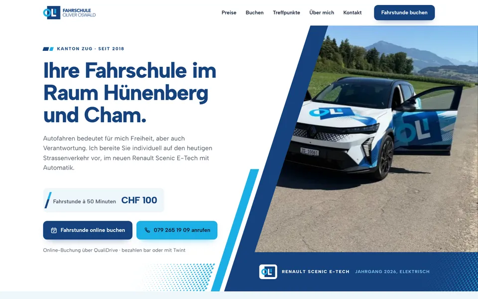
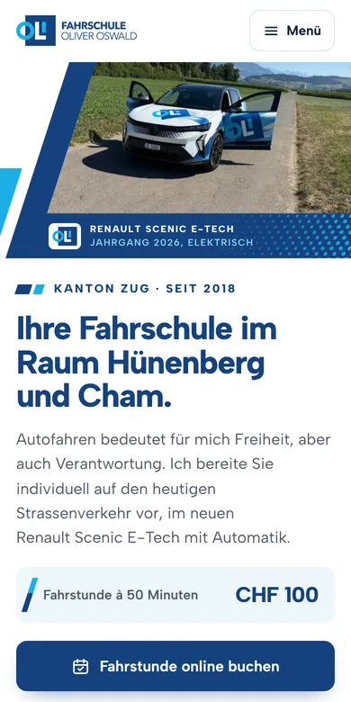

Design A
Schräge Flächen
Hell und klar, gestaltet wie die Beschriftung Ihres neuen Scenic: schräge Flächen in Dunkel- und Hellblau mit Punktraster. Im ersten Bild steht der Scenic mit offenen Türen vor dem Bergpanorama, daneben die Fahrstunde für CHF 100 und die Knöpfe «Fahrstunde buchen» und «Anrufen». Eine Wochenansicht zeigt auf einen Blick, wann Fahrstunden online buchbar sind.
- Hell und klar
- Wie Ihre Autobeschriftung
- Wochenansicht